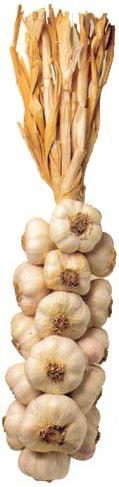
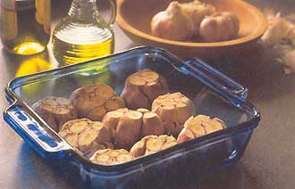
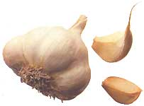

Garlic Recipes: Garlic Dip, Soup, Ice Cream And More
Celebrate this healthful, scrumptious herb with these recipes for everything from simple garlic dips to more elaborate garlic soup to out-of-this-world garlic ice cream!
By K.C. Compton
October/November 2001
In my childhood home, garlic was an exotic herb that found its way to us primarily as powder sprinkled modestly over steaks, which were then broiled to a lifeless leather. My mother is a fabulous cook, but in the 1960s, the whole country was flavor-shy, preferring foods like Hot Dog Roll-Ups and pineapple-carrot Jello mold - featuring, inexplicably, neon green lime Jello.
In this regard at least, I’ve outgrown my heritage. I now favor recipes that start out, “Take all the garlic you can find in the neighborhood. Mince ...”
My transition from flavorphobe to garlic maven was gradual - a little garlic bread here, a Caesar salad there. The process received a kick-start years ago when I was a newspaper reporter in New Mexico. A group that called itself the Placitas Garlic Growers’ Consortium invited me to visit them and hear their farm-to-market plans.
The centerpiece of their presentation was an “all-garlic meal” - right down to the the piece de resistance, Garlic Brickle Ice Cream - which might have repelled reporters fainter of stomach but certainly captured my imagination.
What followed was a savory saturnalia, a celebration that satisfied my senses and left me saturated with the pungent scent of this healthful, scrumptious herb.
In other words: I reeked for days.
But it was a good reek - at least to my way of thinking. My husband at the time didn’t see things my way and shunned me until I “got that stench” out of my system. He is no longer with me, but my affection for garlic continues unabated.
I no longer have the menu from that first garlic-suffused meal, but the following are some of my favorite recipes from a variety of sources. I haven’t actually made this garlic ice cream, but once your harvest starts coming in (Planting Garlic), you may have such an abundance you’ll be tempt ed to experiment. Garlic ice cream might never rival Rocky Road, but it will certainly make your dinner guests take notice.
EGGPLANT TAPENADE
Ingredients:
1 medium eggplant
1 can of pitted black olives
2 tablespoons olive oil
2 cloves garlic (or much, much more)
3 or 4 sun-dried tomatoes, rinsed and patted on a paper towel
Instructions:
Pierce eggplant several times with a fork and bake at 350 degrees for at least 45 minutes. When the eggplant is well cooked (it will give slightly when you press on it), remove from the oven and cool. Chop olives lightly in the food processor. Peel the skin from the eggplant and add pulp to the food processor along with the olive oil, garlic and tomatoes. Blend with processor until finely chopped but still minced. Don’t lose your focus or you’ll end up with puréed eggplant goop. Cool and let stand at least an hour. Serve with sliced French bread toast and call it crostini, or just serve with crackers if you don’t want to be high faluting.
CREAMY SPINACH DIP
This does not taste low-fat - a quality we all admire in dips.
Ingredients:
1 (8-ounce) container reduced-fat sour cream
1 cup fat-free mayonnaise
1/2 cup canned artichoke hearts, chopped
1/2 cup frozen spinach, thawed
3 scallions or green onions, diced
1 teaspoon garlic powder
1 tablespoon sun-dried tomatoes, finely chopped
1 tablespoon shredded Asiago cheese (or parmesan or Romano)
Instructions:
Heat oven to 350 degrees. Roll spinach in paper towel and squeeze to release water, or make it dizzy in your salad spinner. Combine first seven ingredients in a casserole dish; sprinkle cheese on top; warm until cheese bubbles. Serve with fresh veggies, baked chips or warm sourdough bread.
CALDO CON AJO (GARLIC SOUP)
I ordered this soup on a trip to Mexico and fell in love with it. Although I didn’t get the recipe, I came up with an approximation of it on my own. This is one of those soups that changes every time I prepare it, according to what ingredients I have in the house and whether my daughter, who is a vegetarian, is visiting. It’s also one of those soups that seems to grow and grow, so it’s great to serve for company. The chicken is optional.
Ingredients:
Olive or other vegetable oil, enough to cover the bottom of a large saucepan or stockpot
1 onion, chopped
5 or so fresh mushrooms, sliced
2 chicken breasts, cubed (Or whatever pieces of chicken you have. Sometimes I employ this recipe to use up meat from a chicken I’ve roasted.)
Lots of garlic, minced (I use an entire head of garlic)
Chile powder or red chile flakes to taste
Oregano and cumin to taste - or cilantro if you like that better
2 to 3 cups chicken or vegetable broth
3 carrots, julienned
2 cups cooked beans - black, kidney or garbanzo
1 large can stewed tomatoes, chopped (I like the ones with jalapeño)
2 limes
2 ripe avocados, cubed
Tortilla chips
Instructions:
Heat the oil; saute onions and mushrooms. Brown chicken. Add garlic and spices. Pour in broth; add carrots, beans and tomatoes. Look around the kitchen or garden and see what else you think might taste good. Add. After ingredients are piping hot and the meat is thoroughly cooked, squeeze in juice of one lime (I like it really limey, so I at least double this). Add avocados and stir for just a moment. Pour over tortilla chips and just before serving, squeeze a wedge or two of lime over each bowl. I serve with warm corn tortillas with butter. If you have any soup left (doubtful) you’ll be happy to discover it’s even better left over, after the flavors have had time to introduce them selves and share a bit of their personal history.
CHERYL’S ARTICHOKE GARLIC DIP
Ingredients:
1 can artichoke hearts, chopped
1/2 cup mayonnaise, low-fat if you wish
1/2 cup Parmesan cheese
2 to 5 cloves garlic, chopped
Instructions:
Sloosh ingredients together briefly. Spoon into a shallow baking dish, garnish with paprika and broil just until bubbly. Serve with wheat crackers, bagel chips or any other crunchy bread-y stuff.
KAREN’S SPINACH SALAD
This is from my Kansas City friend Karen who says that, even though her husband Gary doesn’t eat spinach (imagine!), she keeps this dressing in the fridge to serve on a variety of fruits.
Ingredients:
Dressing:
1/4 cup cider vinegar
1/2 cup sugar
1/4 teaspoon Worcestershire sauce
1/4 teaspoon paprika
1 tablespoon poppy seeds
2 tablespoon sesame seeds
Minced garlic (1 to 3 cloves)
1/2 cup olive oil
Salad:
1 pound fresh spinach
1 pint fresh strawberries
Chopped walnuts
Optional water chestnuts and/or onion
Instructions:
You can just shake the dressing ingredients, but they will emulsify better in a blender. Put all ingredients except oil in blender. Slowly drizzle in oil. Clean and slice strawberries, wash spinach well and tear into bite-sized pieces. Arrange walnuts and sliced water chestnut or onion on spinach and strawberries, then dribble dressing over all.
STIR FRY
Ingredients:
Olive or other vegetable oil to cover bottom of large skillet
1/2 to 1 teaspoon garlic oil, in the grocery gourmet section - or from your friendly local garlic grower
Large onion, chopped
Several cloves of garlic, minced
1/2 teaspoon powdered ginger
1/2 cup carrot, sliced
1/2 cup small broccoli florets
2 small zucchini, sliced
2 small yellow squash, sliced
1 red bell pepper, sliced
1 cup fresh mushroom, sliced
1 egg
Soy sauce to taste
Hot, cooked brown rice
Optional: You can add chicken and/or thinly sliced beef to this. Cook after the onion and before the garlic.
Instructions:
Saute onion in hot oil. Add garlic and cook for just a few seconds (it will burn easily). Add in ginger, carrots and broccoli, stir for a minute or so, then add the squashes and stir. Add bell pepper and mushroom last, and cook only slightly (I like the pepper still crunchy). Crack egg over skillet and stir quickly, then add soy sauce. Serve over cooked brown rice.
GARLIC ICE CREAM
Recipe is from The Stinking Rose Cookbook, by The Stinking Rose Restaurant in San Francisco (Call the restaurant, (415) 781-7673 to order the cookbook).
Ingredients:
3 cups whole milk
1/4 teaspoon garlic, minced
1 vanilla bean, split in half
1 cup heavy cream
1 1/2 cups granulated sugar
9 egg yolks
Instructions:
Put milk, garlic and vanilla in a saucepan. Bring to a boil and remove from heat. In a mixing bowl blend cream, sugar, and egg yolks. Strain scalded milk mixture into the egg and sugar mixture, stirring constantly. Return combined mixture to the pan and stir continuously over moderate heat until it coats the back of a spoon, about 10 to 15 minutes. Cool in an ice bath. Add cream mixture. Pour into ice cream freezer and churn until firm. Make sure your guests understand that the garlic flavor is intentional. Otherwise, they’ll think you forgot to wash the mixing bowl.
FINALE
If ever there were a time for breath mints ...
 PHOTO: RICK WEATHERBEE Garlic has a long and illustrious history of promoting good health, so you can’t go wrong including this delicious herb in your diet. |
 MOTHER EARTH NEWS STAFF Studies show that garlic helps reduce cholesterol and high blood pressure. |
 RICK WEATHERBEE Roasted garlic is easy and surprisingly mild-tasting. Peel the “paper” layer off tops. Place in baking dish, sprinkle with olive oil and whatever herbs you like. Seal with foil. Bake in 400 degrees from skins and spread on warm butter. Say “mmm.” |
|
 MOTHER EARTH NEWS STAFF Since antiquity, people worldwide have used garlic to prevent and combat a long list of infectious diseases, cancers, heart disease and other conditions. |
|
|